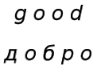

Беседа 3517 от 3877 · Беинса Дуно
Изгрява слънцето
„Добрата молитва“
„Изгрява Слънцето“
Ще прочета един стих от Първото послание на Иоана, 5-а глава, 3-тия стих: „Защото тая е любовта Божия, да пазим заповедите Негови; и заповедите Му не са тежки.“
Когато идвате, носете песнопойките. Тъй, както сега пеете, не е пеение. Трябва да имате грамотност в пеенето. Сега вие седите в такива предисторически понятия, мислите за неща, които нямат реалност. Вие мислите, че можете да влезете в небето. Мислите за един рай, който не съществува. Вие живеете в живот, който не разбирате. Мислите, че този живот е много лош. Този, лошият живот, е най-добрият живот, който сега съществува. Ако влезете в още по-добрия живот, ще бъде още по-лошо. Тогава какво ще добиете? Трябва да се разбира. Хубавите работи са скъпи. Щом видиш една хубава дреха, тя е скъпа. Някоя е евтина, от 5 лева, но не е хубава. Скъпите работи може да са от 10, 15, 20 000 лева. Един скъпоценен камък хиляди струва. Много скъп, но хубав.
Сега най-понятното число е 1. Вземете 2, имате числото 3; имате:
1.2.3.4.5.6.
Представете си, че махна точките, стане:
123456
– цяло число. Какво представя това число, какъв сбор представя, колко хиляди? 123 хиляди и 456. Ако разменя местата на първите цифри, имаме 213456 и после 312456. Какви са съображенията, за да напиша първото число или второто? Представете си, че аз съм банкер. Най-първо вие сте взели 123 456 лева; взема, че разменя числата. Какво ще бъде на вас? Ако увеличавам числата, на вас какво ще бъде? Какъв ще бъде моят морал? Значи аз мисля за себе си. Представете си, че започна да ги намалявам. Вие имате да давате 312 хиляди, аз ги намаля на 123 хиляди. Какъв ще бъде моралът?
Сега вие всеки ден ту намалявате, ту увеличавате. Когато се отнася до вас, вие намалявате. Когато се отнася до другите, вие увеличавате. Тогава какъв е моралът? Вашите погрешки ги правите микроскопични, хорските погрешки ги правите биволски. Сега търся сравнение.
Казвате: „Не може ли да измениш тия числа?“ Щом измениш тия числа, те са динамични. Знаеш каква динамика има в числата? Вие имате две очи, имате две уши, имате един нос с две ноздри, имате една уста. Устата ви с какво се занимава? Устата ви се занимава с благата на Слънцето. Какво може да произведе Слънцето на Земята? Вие опитвате ябълка, опитвате круша, опитвате какво Слънцето е направило. Казвате: „Туй е хубаво, туй не е хубаво.“ Вкусът му е такъв. Дойдете, с двете ноздри схващате уханието, което излиза от цветята. Туй Месечината направила. Или пък някой път туряте парфюм. Защо? Имате някакво ухание, искате хубаво ухание. Вие сами по себе си нямате хубаво ухание като един цвят, миришете лошо. Вземете от хубавото ухание от някой цвят, наръсете се. Не е лошо. Ще турите едно обявление, ще кажете: „Аз благодаря на цветята, които покриват моите недостатъци.“ Сега всеки един от вас може да приведе това за пример.
Цялата природа е едно възпитателно училище. Трябва да се възпитавате. Най-първо трябва да се научите да гледате. Като срещнеш един човек, да видиш какво чело има, второ, да видиш носът му какъв е, най-после – устата му. Това са най-важните работи: челото, носът, устата. След туй виждаш какви са ушите му. След туй виждаш веждите му. Защото неговите вежди много означават, те са път. После виждаш брадата му каква е. Ако туй чуканче не е оформено, ти не можеш да разчиташ на него.
Сега всеки един от вас може да каже: „Туй е казано.“ Не важи за нас какво са казали. Вие пеете един тон в музиката, да кажем до. До има съдържание. Тъй, както пеете, основният тон има 256 трептения. По парижкия строй има 437 трептения в секунда. Ти по някой път вземеш един тон, произвеждаш приятно настроение, като пееш, усещаш приятност на слънчевия възел. Като пееш, някой път усещаш приятност в мозъка. Ако приятността чувствуваш в мозъка, е едно нещо, ако я чувствуваш долу в слънчевия възел, е друго. Ако чувствуваш горе в мозъка приятността, тонът е красив; ако чувствуваш приятността в слънчевия възел, тонът има съдържание. Вие пеете: „Изгрява Слънцето“. Тъй, както го пеете, не може да ви ползува. Изгряването на Слънцето тебе трябва да те интересува. Изгряването на Слънцето е велик момент. Представете си 20 години си затворен в една тъмница, дойде някой и каже: „Свободен си.“ В тъмницата си бил, сега те пускат на свобода, на светлина, изгрява Слънцето за тебе. Каква ще бъде радостта?
Аз съм привеждал примера за онова магаре, което прекарало 10 години в рудниците в Америка. Като го извадили, като видяло Слънцето, търкаляло се и ревало магарето. То реве и казва: „Слава Богу, че се освободих.“
Сега давам този пример. Мене магарето не ме интересува. То е естествено състояние на магарето. Вие разбирате неговите лоши черти, че е упорито магарето. Но вън от упоритостта на магарето, то има най-хубавите черти. То показва къде има най-хубавата вода. Упоритостта не се подчинява на никакви убеждения. Като влезе в село, ще си изреве. Какво ще мислят хората, то не иска да знае. После, като му туриш конски мухи, пак скача. Вие имате една постъпка, която е магарешка. Не е лошо. Магарето не може да търпи конските мухи. Ако е натоварено с грозде, то се търкаля на земята и развали гроздето. Не че иска да го развали, мухите му причиняват голяма неприятност. Не знае, че то ще развали туй грозде, не му иде на ум. Един ваш приятел ви каже само една дума, пусне ви една конска муха и вие легнете на земята, развалите цялото грозде – вие не постъпвате ли магарешки? Магарето казва: „Не мога да търпя мухите.“ Вие казвате: „Тази дума не мога да я търпя.“ Не можеш да търпиш, но туй нетърпение е неразумно.
Сега, има и други начини за конските мухи. Конските мухи бягат от пеенето. Като пееш една песен, те бягат. Казвате: „Как бягат?“ Като пееш както трябва, ти с пението произвеждаш известни трептения, мухите не могат да ги търпят и те бягат. Казвам: По някой път вас ви газят лошите мисли. Защо ви газят? Защото не пеете. Лошите мисли никога не могат да търпят трептенията на една хубава песен. На една от най-лошите мисли изпейте една песен, като разбере, бяга. Ако не знаете да пеете, мухите ще се наберат, 1, 2, 3, 4, 100.
Сега питам: Защо конските мухи магарето не може да ги търпи? Конят е тщеславен, магарето е горделиво. Конят търпи конските мухи, понеже те, като седят при него, хвалят го и той ги търпи. Всичките насъбрани, казват: „Като тебе няма друг, ти си първият кон в света.“ Нему му е приятно. Щом се качат тия мухи на магарето, то не може да ги търпи, понеже то не обича да го хвалят. Какво обича магарето? Магарето обича крайната свобода. Като го пуснеш в кервана, напред върви, никога не остава на опашката. Като върви напред камилите, казва: „Няма като мене.“ Понеже конските мухи не се подчиняват на магарето, то ги изключва, казва: „Тия, конските мухи не са за мене.“
Сега, тия сравнения ако не ги разбирате, те са вредни. Във вас ще остане мисълта: „Какво ни интересува магарето и конските мухи?“ Отношение имат. Тия числа сами по себе си не са важни, но ако станат динамични, оформяват се в една полица в книгата; тогава работата е много сериозна. Така, написани на дъската, нищо не значат, но тия числа, оформени на книга, тия числа се оформяват и вътре в тебе. Ако едно число е оформено в твоя нос, ако едно число е оформено в твоите вежди, в твоите уши, то е динамично, ти не можеш да се избавиш от неговите последствия.
Та, казвам: Съществува закон, който трябва да пазим. Не искам да ви турям закон, аз не искам никакви нови закони. Ония закони, които Бог положил (Бог като мислил цялата вечност, положил закони), по-хубави закони от тях няма. Писанието казва, че не са тежки тия закони. Заради Любовта на Бога трябва да бъдем в състояние да се учим хубаво. Ние обичаме да се учим, понеже Бог ни обича. Казва да бъдем добри, понеже доброто е основа на цялото битие, на всичките блага, които ние имаме.
Сега седим, имаме идеята, че един е по-даровит, друг не е даровит. То са наши понятия. Всичките души са еднакво одарени. Но не са поставени при еднакви условия. Защото те са излезли от Бога в едно и също време, но мястото, което Бог им дал, не е едно и също. Устата няма службата на очите. Устата се научила да вкусва, очите се научили да гледат, носът – да ухае, ушите се научили да слушат, ръцете се научили да работят, краката се научили да ходят. Питам: Тия функции, взети отделно, какво показват? Съединени в едно, те показват тия числа като целокупно число.
Първо имате числото 1. То представя Слънцето. Ако ти знаеш как да възприемаш тази енергия, ти ще се ползуваш. Едното означава Слънцето, трябва да разбираш законите му. Единицата означава да разбираш законите на енергиите, които изтичат от Слънцето. 2 е числото на Месечината. Трябва да разбираш какво означава Месечината. Човек, който иска да се освободи от каквато и да е болест, който иска да прогресира, да се учи от Месечината. За чистене Месечината е авторитет. След туй имате 3. То е Юпитерово число, или число на един син, който трябва да се подчинява на баща си. Ти без 3 не знаеш как да служиш на Бога. 3-те ще те научи как да служиш на Бога, какво отношение [да] имаш. Казва: „Зная да пиша 3.“ Аз може да зная да пиша 3, но знаеш ли да постъпваш? Ако не знаеш да постъпваш, тогава числото 3 написано ли е?
Тогава вие пеете „Изгрява Слънцето“. Как трябва да се изпее? Не че е погрешно, но резултати няма да имате. Сега като ви напиша туй число, ще се ползувате ли нещо? Нищо не се ползувате. Ако взема това число и веднага го осребря, че ви го дам, тогава веднага ще се ползувате вие.
Та, сега казвам: Трябва да има отношение между природата и нас, между Бога и нас трябва да има отношение. Не само да бъде форма. „Изгрява Слънцето“ да не бъде само форма. Когато Слънцето изгрява, то е един от най-великите актове. Да виждам, че изгрява Слънцето, да виждам, че Господ върви зад това Слънце. Като гледаш Слънцето, да знаеш, че зад тази свещ седи Господ. Пеем „Изгрява Слънцето“. Някой да го изпее сега. (Учителят пее :
Изгрява Слънцето,
праща светлина,
радост носи за живота тя.
Зун мезун, зун мезун,
бином тумето.
Ум е ум, ум е ум,
добрият ум.
Ум е ум, твоят ум.
То започва от си, аз го пея от ла. „Изгрява Слънцето“ има три коментарии. Ако го взема от сол, Слънцето цъфти. Ако го взема от ла, Слънцето зрее. Ако го взема от си, Слънцето какво прави? (Учителят пее пак „Изгрява Слънцето“.) Аз пея за себе си. Искам тук песните да ги носите, на ум да пеете. Всичките песни са изопачени. Всеки направил своя песен. Не е лошо да съчините някоя песен, нямам нищо против това. Но то е едно правило. Много простите песни не вървят по всичките правила. Основните принципи в песните са турени много добре. Слънцето изгрява, движи се, праща светлина. После разцъфтява се. После имате ми, тонът значи, че Слънцето мисли. Пак имате движение, после пак се разцъфтява още веднъж. Си има отношение към мене. Ла значи зреене, то значи онези блага, които Слънцето носи. Сега ако бихте ги изпели на българска мелодия? (Учителят изпя думите на песента „Изгрява Слънцето“ на българска мелодия.) Другите неща са като нещо написано на морския бряг. Ще се заличи. Само ефект произвежда.
Сега, не само да се пее. Може да го изпея класически. (Учителят изпя същата песен на класическа мелодия.)
Казвам: Трябва да пеете, понеже без пение, то е един метод външен. Сега както се изучава, музиката е много тромава. Много механически изучават. Вземете до: подразбираме едно семе, което се посажда. Пея ре, разбирам: туй семе расте. Вземам ми: в ума ми е, че туй семе започва да мисли, съзнание има. Пея фа: туй семе се обуславя, събира. Фа е земен метод, събира енергия на Слънцето. При сол цъфти, при ла зрее. При си опитвам му благата. Цял един процес. Като пея още, виждам процесите, които Бог турил вътре в законите. Цялото ми тяло оживява. Често аз ходя музикално. Аз, като излизам, вземам тон. Като тръгна, вземам ре правилно и тогава леко се върви. Започна някой път да правя нещо. Трябва да взема ми. Щом взема ми, моята работа е свършена. Един художник може да вземе ми. Той взема ми, без да има правилно схващане за картината. Ако не вземе ми, все ще направи някаква погрешка. Ти не можеш да направиш добро, ако не вземеш ла. Ако не знаеш ла, добро не можеш да направиш. Пък доброто да го направиш, трябва да имаш какво да даваш. Трябва да знаеш как да направиш туй добро. Ти свириш една песен. Тя трябва да е узряла, за да ти бъде приятна.
Всички трябва да имаме желанието каквото свършим, да е благоугодно. Като ни слуша Господ, да е доволен от нас. Като пеем, казва: „Така не се пее.“ Дал ни глас, казва: „Така не се пее.“ Има и други певци, които ни слушат. Като пея, цял концерт, по радиото ще ме слушат. Казват: „Така не се пее.“ Не че ме осъждат. В музиката осъждане няма. Щом не пееш хубаво, оставаш назад, докато останеш на опашката. Като започнеш да пееш хубаво, вървиш напред, дойдеш в средата, докато станеш пръв. При пението пръв не може да стане, който не пее. Който пее, той е пръв. Той разнася Божиите блага. Човек, който е пръв, той раздава Божиите благословения. Сега мнозина искат да бъдат първи, без да раздават Божиите благословения. Като бъдеш пръв, ще раздаваш Божиите благословения, всички ще се радват. Ако всички сме първи, още по-добре. Последен който е, ще събира укрухите. И то не е лошо, и то е хубаво. Всичките изгубени работи последният ги намира. Каквото има изгубено нещо в живота, умрял някой, последният ще го намери. Изгубените пари последният ще ги намери. Първият носи благословението, последният изгубените работи ги намира и ги дава.
Желая и първи да бъдете, да раздавате Божиите благословения, и последни да бъдете, че каквото е изгубено, да го носите на място. Като първи, Господ да се весели и като последни, пак да се весели. Не като намерите нещо, да кажете: „То е наш късмет, да остане за нас.“
Сега не искам да остане кривата мисъл. Днес, какъвто език и [да] учите… Ако идете в Англия или [в] България… В Америка едва срещнах трима американци, които говореха хубаво английски, музикално. Тук, в България, двама българи съм срещнал да говорят български добре. За себе си казвам, че още български не съм научил. Сега го уча. Доста труден език е българският. Когато се говори един език без любов, той е безсъдържателен. Да говориш един език с любов, че всяка дума да има смисъл. Като кажеш тази дума, да има само един смисъл. Какво разбираш под думата българин? Под българин ще разбираш любовта. Под българин да разбираш знанието. Под българин да разбираш истината, живата светлина, свободата, то е едно нещо; под българин да разбираш един, който ходи да се бие, е друго нещо.
Под думата човек аз разбирам Любовта, Божията любов, която се проявява във всевъзможните нейни прояви. Под думата човек разбирам Божията мъдрост, под думата човек разбирам Божията истина, която се проявява в хората. Истината на Бога не може да се прояви само при един човек. Тя се проявява в безброй същества. Голяма вода е тя.
Та, сега ще се стегнете да учите. Досега сте били слушатели, не съм ви изпитвал. Бих желал да ми изпеете една песен, каквато и да е, може да е българска, някаква английска или френска, без разлика за мене. Песента ще пеете на какъвто език искате. На който и език да пеете, ако пеете една песен с любов, тя е разбрана. Ако пеете с любов една турска песен, тя е разбрана; ако пеете една българска песен с любов, тя е разбрана. Ако пеете без любов, на който език и да пеете песента, тя си остава неразбрана. И самият език е неразбран. Ако на български говорите с любов, един англичанин ще ви разбере. Ако един англичанин говори на английски с любов, вие ще го разберете. Без любов хората не се разбират. Любовта трансформира езиците, трептенията на езиците стават други.

Казвате: „Трябва да се освободим.“ Личното в живота препятствува. Знаеш колко мъчно се поправят личните погрешки? Погрешките хиляди хора са ги правили. Вървя аз някъде, правя същите погрешки. Вляза в едно течение както всичките хора, които са влезли, и ги влече. Аз мисля, че мога да го прекръстосам сам. И мене влече, и аз отивам надолу. Силното течение може да ни отвлече. Погрешките показват, че сме минали през едно силно течение, което ни е отвлякло. Човек, който минава през силна река, той трябва да вземе посока един километър нагоре, за да дойде на мястото, дето иска. Ако върви направо на целта, ще иде един километър по-долу. Но трябва да имаме един висок идеал, за да влезем точно там, дето трябва.
Сега аз ви проповядвам за общото. Трябва да живеем за Господа. Под думата общо трябва да имаме ясна идея. Казва: „Да живеете за всичките хора.“ Да живея за Господа, Който е вътре в мене. Едно разбиране да имате. Като живея заради Него, туй благо се разпределя за всичките хора. Аз не мога да мисля за всичките хора изведнъж, но за Господа може да мисля в себе си. Щом мисля заради Него, туй, което мисля заради Него, Той го разпределя на другите. Живейте заради Господа, не правете погрешки.
Ти се разгневиш. Музика е да знаеш да се разгневиш [на свят]. Ти се разгневиш за нищо и никакво. Да се разгневиш както Господ се е разгневил, разбирам. Да се разсърдиш както Господ се е разсърдил. Какво разбирате вие? Гневи се, яростен става и наказва. В Писанието я четете пророците: има един Господ, за Който те говорят. Има един Господ, Който е свързан с нас, Който живее в нас. Ти направиш нещо, той те хване за ухото и казва: „Тази постъпка не е права.“ Кажеш нещо, пак те хване и ти казва: „Туй нещо не трябваше да го казваш.“ Какво има, че те хване за ухото? Казваш: „Хвана ме за ухото.“ Когато Господ те хване за ухото, то е привилегия. Да не те хване едно магаре или кон, че да ти отхапят ухото, то е друг въпрос. Когато Господ те хване и те разтърси, то е благословение. Веднъж като те хване Господ, човек ще станеш. То е благословено, Божието наказание. Всичко, което излиза от Бога, е благословение. В мене тази е идеята. Днес колко време взема, докато се убеди човек? Не може да се убеди. Казваме някой път: „Защо нареди Господ да съм сиромах?“ За добро е, казвам. Ти се заблуждаваш, че си сиромах. Господ толкоз знания ти дал, какво има да мислиш, че си сиромах?
Сега между вас да се образува една хармония. Като не се образува тази хармония, набира се излишна енергия, става нещастие.
Аз съм превождал примера и пак ще го приведа. В един от градовете в Америка, в Джонстън, богатите американци искали зимно време да се плъзгат по леда. Нямали езеро. Направили един бент на една река и направили едно голямо езеро над града. Десетки години тия американци се радвали на езерото, хич не им идвало на ум, че този бент може да се събори и градът да пострада. Става едно наводнение, събаря се бентът. Туй станало в миналия век и 2000 души се удавили. Водата дошла до третия етаж, до най-високите къщи.
Сега и ние правим същото. Ние подпушваме известни Божествени енергии, за да [се] плъзгаме, но не ни иде на ум, че този бент може да ни повлече. Никога не подпушвайте енергията, която е над вас. Отдолу под вас колкото искате подпушвайте. Отгоре над нас и дясната страна на вашия живот не подпушвайте. Каквото прави дясната ръка, лявата да го не знае. Подпушвай лявата ръка, но дясната – никога. Подпушвай левия крак, но десния – никога. Туриш десния крак напред, спри се, може да се върнеш. Десният крак е напред, пропаст има, ако стъпиш с левия крак, в пропастта долу ще идеш. Ще се подпушиш, ще се върнеш. Казва: „Аз не съм свикнал да се връщам.“ Как не си свикнал да се връщаш? Ти не си птица, да хвъркаш, човек си, който ходи. Ще се върнеш, назад ще отстъпиш и тогава ще вземеш отдясно.
Сега вие искате да знаете колко ще успеете. Аз ще ви дам един пример. Вие питате колко сте успели. Заболи ви кракът. Заповядайте на крака, кажете му да ви мине. Ще си туриш ръката на крака, ще кажеш: „Да се не обленяваш. Викал си гости. Днес не е време за гости, но за работа. Никакъв шум да се не дига в етажа, такива увеселения да ги няма. Всички на работа! Чу ли, разбра ли?“ – „Разбрах.“ „Че туй е увеселение, пиене, ядене, дигане шум не може. Книжките ще си вземете, на работа ще идете. Разбрахте ли?“ – „Разбрахме.“ Вие вървите някой път, кракът казва: „Нека си говори, не го слушай, ние ще си ядем и пием“ – ние не сме много успели.
Сега вие се сравнявате, искате да знаете кой ще успее. Един с друг никога не се сравнявайте. Поука вземете. Като видите някой брат, който направил погрешка, дайте угощение. Речи: „Давам угощение, днес видях нещо много хубаво. Аз поправям една такава погрешка, аз поправям себе си. Ако този брат не беше направил погрешка, да падне в трапа, да се окаля, аз можех да падна. Правя угощение, правя поука, заобикалям трапа, свърши се въпросът. Една поука е заради мене, какво има.“
Всичките погрешки в света са за нас, нашите погрешки са за напредналите същества. Всяка наша погрешка е поука за напредналите същества. Тогава, ще кажете, като говоря така, да правим погрешки. Всяка наша погрешка е възможност за напредналите същества да направят нещо хубаво. Злото излиза от доброто. Злото съществува, понеже доброто съществува по-напред. Ако доброто излизаше от злото, тогава щеше да е лошо. Понеже злото излиза от доброто, доброто е господар на злото. Туй зло един ден ще се превърне на добро. То временно се показва на зло. Един човек не ви обича, но утре, като ви обикне, ще бъде друго.
Да ви дам един пример. Един англичанин влюбил се в една англичанка, доста богата и красива. Тя не го дочакала, оженила се за друг. В него се събужда чувството да ѝ отмъсти. Той става лекар, с цел само да му се удаде случай като заболее, да я умъртви, да си отмъсти. Тя схваща това, ражда една много красива дъщеря. Един ден се разболяла, пише му едно писмо и го праща по дъщеря си, казва да дойде да я лекува. Казва му: „Ти се влюби в мене. Ето, аз родих дъщеря. Аз ти я давам, оженете се за нея.“ От този ден вече той се променя. Омразата престава. Дъщерята замества майка си. Жертвата не е нищо друго, освен да дадем нещо от себе си, за да се избавим от едно зло. Жертвата е избавление от едно зло, което е излязло от доброто.
Сега аз няма да се спирам върху по-дълбоките причини, защото в битието първият принцип е, който ражда злото. Първият принцип ражда злото. Доброто е една необходимост при създаването на света и злото е една необходимост. Създаването на този свят е добро, но за да се създаде този свят, злото е една необходимост. Следователно злото иде като една необходимост, за да може да се създаде добрият свят. Ние критикуваме Божиите работи. Бог дава злото, за да се създаде този свят. Като се създаде, злото ще се подчини, омразата, всичките противоречия ще изчезнат.
Сега ще оставим Бог, Който допуснал злото, няма да се месим в Неговата работа. Коя е моята работа? Моята работа е да отворя прозорците и да дигна завесите, когато Слънцето изгрява. Моята работа е да пусна завесите, когато Слънцето залязва. Моята работа е да почистя стаята. Не е моя работа да се меся в изгряването и залязването на Слънцето. Че небето е облачно не е моя работа. То е работа на Слънцето. Обаче аз може да почистя своята стая, може да отворя прозорците, да ги затворя. Вие правете това, което е ваша работа. Не се месете в Божиите работи, как трябва да изгрее Слънцето и как да залезе. Не се месете как хората трябва да живеят. Как трябва да живея аз, то е моя работа. Как хората трябва да живеят, то не е наша работа. Никога не осъждайте никого защо прави това. Оставете този въпрос. Христос казва: „Отец не съди никого.“ Някога човек може да съди, че някой направил погрешка. То е от негово гледище. Че някой направил погрешка, то не е моя работа; аз защо ще се меся в чуждите работи?
Казвате после: „Ние не живеем добре.“ Оставете туй, че не живеем добре. Засега хора, да живеят по-добре от изгревчани, няма. По-добри от изгревчани няма. Ако тук има погрешки, какво ще бъде вън? Вие ще кажете: „Светии има.“ Кажете ми къде са светиите, донесете ми, тия светии, къде са те? Имало ги някъде в Индия. Виждали ли сте ги? Ние говорим за светии, които се виждат. Светиите защо са оцапани? Помагали, изваждали хората из калта. Кой няма да се оцапа, като извади някого из калта? Кое е по-хубаво: да се оцапаш и да извадиш някого от калта или да стоиш чист и да не помогнеш никому? Казва: „Нека се дави, друг да влезе да го извади.“ Влизаш вътре, изваждаш го, нищо повече.
Да се радваме, че можем да служим на Господа при всичките условия на живота. Няма по-хубаво нещо. И като страдаш, и като се радваш, и като си сиромах, и като си богат, да не мислиш, че туй во веки ще бъде. В дадения случай то е за момент. Всичко, което ви се случва, то е извън времето. Дойде ви неприятна мисъл, зарадвайте се. Дойде ви една приятна мисъл, пак се зарадвайте; два пъти се зарадвайте за нея. За неприятната веднъж се зарадвайте, за приятната два пъти се зарадвайте.
Сега тия работи, които ви казвам, са мъчни. Но аз ви давам най-лесните. Аз не съм искал от вас да направите невъзможното. Вие имате 10 лева. Казваме: „Дайте един.“ Има ли невъзможност? Не казвам: „Дайте всичките пари.“ Дай един лев, нека ти останат 9. Вие имате 10 лева. Ако стоят 10-те лева, те са в хамбара. Като дадеш един лев, остават ти 9, то е посаждане. Щом сте дали един лев, туй показва, че сте посели семето. Туй семе ще даде плод. Всякога щом имате 10 лева, не ги оставяйте. Щом срещнете някого, дайте един лев, 10-те лева не са полезни, 9-те лева са полезни. Щом имате 100 лева, дайте 10 и от 90-те дайте един лев, тогава за вас да останат 89.
Сега аз виждам къде е мъчнотията. Мъчнотията е да се живее без любов. Когато обичаш някого, бръкнеш, върви, тече. Но щом не го обичаш, бръкнеш, започваш да мислиш да му дадеш ли или да не му дадеш. Казваш: „Той ме обиди един ден.“ Той ще се научи на нещо лошо. Като го обичаш, казваш: „Какво има, че съм дал на тебе?“ Той го приема. Аз считам, като правя добро, аз се спирам да видя Господа. Имам едно огледало, в което виждам лицето на Господа. Гледам как ме гледа. Бръкна, дам един лев, гледам, не се мени лицето на Господа. Турям два – не с мени; турям три – не се мени. Най-после, каквото имам, всичко дам – промени се. По някой път на единия лев се усмихне, някой път на 10-те лева се усмихне. Туря един лев с ръката си. Някой път става друго. Намислил съм да дам някому 1000 лева назаем. Бръкна, мисля да му дам 1000–2000 лева – лицето на Господа става сериозно. Бръкна да му дам 3–4000 – става още по-сериозно. Започна да намалявам, 1000, 500 лева и като дойда до един лев, усмихне се Господ. Господ казва: „Не му трябват повече от един лев.“ Други са пътищата на Господа. Единия лев, даден по Бога, е благословение; 1000 лева, дадени с любов, са благословение. 1000 лева, дадени без любов и един лев, даден без любов, нямат резултати.
Казвам: Всяко нещо, което правите, свободни да бъдете. „Но какво ще кажат хората?“ Свободни да бъдете.
Аз скоро бях си изгубил една музикална книга, задигнали я някъде. Възмущавам се. Толкоз години са писали на нея, няма я сега. Рекох: „Или ще ми дадете музикалната книга, или…!“ И най-после дойде тефтерът. Донесоха я. „Как?“ – ще кажете. Търсих го тук, търсих го там, навсякъде го търсих. Казвам: „Не трябва да губим тефтера.“ Хубаво нещо, ценно, защо ще го вземат? Някой брат взел тефтера, ще пише. За какво? За спомен от Учителя. Не става за спомен. Да дойде, да го вземе да го препише, но за спомен да вземе тефтера, не е право. Толкоз братя има, ако е за спомен, нека дойдат всичките да го препишат, но да вземе един тефтер, то е престъпление. Казвам: „Да се оправи тази работа!“ Търсих в библиотеката горе, долу, навсякъде, няма го. Един ден отидох, тефтера го намерих, там долу турен. Какво ще кажете? Не му мисля откъде е дошъл. На себе си казвам така, аз го обяснявам: „Не е чудо за мене, не съм го видял.“ Намерих го на един ъгъл. Казвам си: „Види се, тук не съм видял.“ Важно е, че тефтерът е там. Как дошъл, оставям. Зарадвах се, че дойде тефтерът. Но досега не оценявах тефтера. На една сестра казвам: „Отсега нататък никому нищо не давам.“ Като дойде, казвам: „Много струва тефтерът.“ Изваждам пример.
Доброто, което Бог е вложил в нас, трябва да го оценяваме, да не го губим. Няма по-хубаво нещо от него, там е всичко написано. Всичките ваши ценности са в туй добро. Него като изгубите, животът е безсмислен. Него като имате, то е благото. Доброто е външната страна на Закона на Любовта. Казвам: Не губете доброто, което е във вас, не го давайте. От лихвите дайте, но самото добро никому не го давайте. Всеки, доброто, което Бог му дал, да го държи за себе си.
Та, казвам: Втория път искам да носите песните. Онези от вас, които по любов може да го направят, да ги носят. Ще ми изпеете „Изгрява Слънцето“. Вас ви е срам. Ще се пресрамите вече. Най-първо ще кажа: Който иска от вас, по любов да изпее „Изгрява Слънцето“. Без тщеславие, да бъде свободен, за Господа да го изпее. Идния път може да го изпеем най-малко 10 пъти. Та, ще го заучите сега. През цялата седмица пейте „Изгрява Слънцето“. Туй слънце да изгрее във вас вътре. Заболи те кракът – попей му „Изгрява Слънцето“. Заболи те главата – тури ръката на главата и изпей „Изгрява Слънцето“. Смутен си – пей „Изгрява Слънцето“.
Вий ще кажете: „Такива детински работи ще пеем сега?“ Ами когато намръщите веждите, как мислите, на място ли е? Да пееш е 10 пъти по-хубаво, отколкото другото. Някой път някой дига шум. Ще кажа: „Братко, да ти попея.“ Ще му изпея „Изгрява Слънцето“. Ако не ме разбере този брат, ще му изпея „Изгрява Слънцето“ на българска мелодия. Много добър сюжет е то.
Някои от песните са мантри. Всичките стари мантри са вложени в песните. Ако ги пеете, ще се ползувате. Тези песни са създадени по законите на бъдещата музика. Понеже онези, които са ги създали от памтивека, се застъпват за тях. Мене не ме интересува дали вие ще пеете. Тези са песни, които не умират. Те са ценни. В природата туй не умира. Аз може да фотографирам някои. То е друг въпрос. Но те са неща, които съществуват. Не е създадено сега „Изгрява Слънцето“. Гласът не е измислен сега. В българското съзнание има нещо, което се е родило. Това показва, че в българския ум има нещо, което е проникнало. То е радостта в съзнанието на българския народ. Всичките тия песни показват новото в човечеството. „В начало бе Словото“, то е песен, досега не се е пяло. Пее се като музика в съзнанието на хората.
Искам да бъдете свободни. Не мислете, че искам да ви изпитвам. За мене някои от вас сте много даровити по пеене, но не пеете. Даже някои от вас можете да пеете много по-добре от мене. Аз не съм от много добрите певци. Сега, когато пея, може да държа изпит с който и да е певец, и с най-добрите певци. Сега туй, което ви показвам, то е нищо. И понеже зная законите на музиката, като пея, аз трябва да имам някакъв мотив. Като пея по любов, е нещо. Като пея по законите на Любовта, е нещо. Като пея по законите на Мъдростта, е нещо. Като пея по законите на Истината, е трето нещо. Всяко нещо има своето време. Аз може да пея не само както на Земята пеят, но и в небето както пеят. И вие може да пеете. Когато една струна се тури на цигулката, нагласи се добре, може да излезе глас. Ако не се тури на цигулката, не може да даде този тон. Ако се тури и се спазват законите, веднага може да произведе тия тонове.
Казвам: Щом се съобразявате със законите на Любовта, щом се съобразявате със законите на Мъдростта, щом се съобразявате със законите на Истината, всичко е възможно. Щом се съобразявате със законите на живота, всичко е възможно, щом се съобразявате със законите на светлината и на свободата, всичко е възможно. Щом не се съобразявате с тях, тогава нещата са невъзможни. Невъзможните неща са извън този закон.
Като казвам „невъзможни неща“, и то е вярно. Казвам: Сега е възможно, трябва да се радвате. По някой път мен ми е неприятно да пея пред другите. Аз не съм от тези, които обичат да пеят на хората. За да пея, трябва да вложа любовта, да имам уважение. Като ви пея, може да ви пея и да подигна във вас амбицията. Но искам да ви подбудя да пеете. Аз пея от любов, за да ви дам една идея, че и вие да пеете. Пея по някой път, когато имам някаква мъчнотия; пея, защото се разрешават. Казвам: По същия начин и вие може да си помогнете, че пеенето всичко разрешава. Но то е запалка. Щом се запали един, всички се запалват.
Казвам: Пейте сега. Няма да бъдете одремали, но ще кажете: „За Тебе, Господи, ще пеем. Сега ще бъдем герои, за Господа всичко да сторим в света.“ Всичко е възможно за Бога в името на Любовта. Всичко е възможно за Бога в името на Божията мъдрост. Всичко е възможно за Бога в името на Божията истина. Защо? Понеже цялото небе е с нас, всички добри хора са с нас, всичко в света е с нас. Извън Любовта не се пее. Сами като останем, то е трудно нещо.
Идния път искам да бъдете като малките деца в първо отделение. Като дойдете, да няма мисъл, че сте големи, но дете в новото знание. Първия път ще пеете на Слънцето. Идната седмица за първи път ще изгрее. То не е изгрявало. Като изгрее, да видите туй слънце във вашето съзнание изгряло, че целия ден да бъдете радостни. Вярвам, че ще го направите. Не искам никой да се оплаква. През тази седмица няма стари. Старите да вървят добре. Да няма прегърбени. Като срещнете една сестра, която е прегърбена, ще пеете „Изгрява Слънцето“. Когото срещнете – „Изгрява Слънцето“. Туй се изисква от всички. Защото сега плащате данъка. Всички ще ги поставим на работа, ще оставим новото да дойде. „Малко да си поживеем.“ – По стария начин мислиш. Днес имаме да плащаме, утре имаме да плащаме. Ще оставим всичките тия платежи, пък ще кажем: „Сега имаме да вземаме вече.“ Изгрява Слънцето, носи вече своите благословения.
Ха сега да изпеем „Изгрява Слънцето“. (Изпяхме го.) Сега работата стана разбрана. Втория път имаме какво да пеем. Онова, което аз искам, става. Те са обикновени работи. Ако вие искате да стане туй, което търсите, то е обикновено. Аз искам да стане волята Божия. Вие каквото и да правите, искам да стане волята Божия. То е единственото желание.
„Отче наш“
21-ва лекция от XXI година
на Общия окултен клас (1941–1942),
държана от Учителя
на 18.II.1942 г., сряда, 5 ч. сутринта,
София – Изгрев.